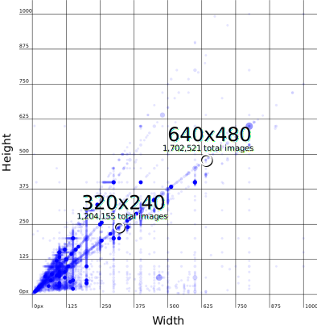
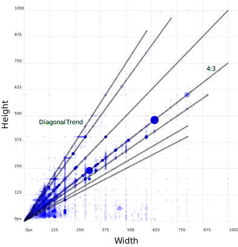
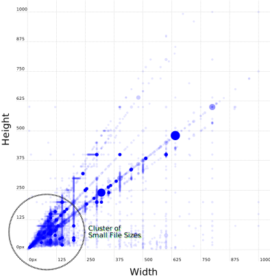

GeoCities Paradise Lost
A look at what gets lost as the Internet grows up.
by Gabriel Drozdov
Chapter 1 Goodbye
GeoCities was one of the earliest web platforms that allowed anyone and everyone to create their own website. Keyword: “was.” In 2009, the then-Yahoo-owned platform officially shut down in all countries except for Japan. (Japan’s service wouldn’t shut down until a decade later in 2019.) And by “shut down,” I mean that all URLs originally leading to GeoCities domains began to rediret to the Yahoo.com homepage, like this one. To that effect, GeoCities became inaccessible, and in a way ceased to exist.
There’s something funny about a website dying, though. Who’s to say that Yahoo isn’t storing the GeoCities database somewhere dark, cold, and out of reach? What even is that database, really?
If we consider what a website is actually made of, we can boil it down to a few types of data. There’s HTML code, which organizes information like text and images. There’s CSS code, which makes that information look pretty. And then there’s JavaScript code, which in the era of GeoCities was not widespread but today offers various forms of interactivity. Theoretically, if we could get access a GeoCities site’s code as well as any other media assets, we could bring the site back to life.
The death of GeoCities was sudden, but it was announced. And in the few months between the announcement and the official closure, a dedicated group of internet archivists appropriately called the Archive Team began a process of preserving as much of the platform as they could. Using web crawlers, which are programs that automatically scour the web and collect data as they go, the Archive Team saved a portion of GeoCities — almost exactly 1TB, or 1000GB, of HTML, CSS, and JavaScript code, alongside audio files, images, and more. And then, they released it to the public.
Anyone, including you, can download this data. Why don’t we try to bring the site back to life?
Chapter 2 How to reanimate a digital corpse
Plot twist: I couldn’t download the data.
Or at least, I couldn’t download the Archive Team’s data. One terabyte of information is an enormous package to get all at once even by today’s standards. Furthermore, if we’re going to invest some time and energy into this resurrection, we had better think about what our goals are.
First, let’s think about what not to do. In this journey, we actually don’t have any interest in reviving dead GeoCities sites. It’s not that this isn’t a valuable endeavor, it’s that others have done this job already (and probably better than we could). There’s restorativland, whose expressed mission is “to excavate shut down, abandoned web ruins and restore them to surfable, visually accessible, searchable, remixable condition.” Sure enough, their GeoCities Gallery offers us a portal into the past. And then there’s the Internet Archive, whose reach into the history of the internet is vast and unconditional. Take an old GeoCities domain, like this one, and see it semi-live on their Wayback Machine.
Instead, our real goal is to get a glimpse of what life was like on an Internet that no longer exists. And for that, the corpse we need to reanimate isn’t a single website — it’s the entirety of GeoCities as a cohesive community.
When we need to move to a big picture perspective, our focus shifts to data rather than design. Any random GeoCities site can give us a sense of one person’s digital portrait, but a spreadsheet can tell us what a whole group of individuals were up to across multiple sites. What images were they using? What audio files were they listening to? What URLs did they link to?
This is where the aforementioned Internet Archive comes to our rescue. Instead of looking at the GeoCities data as one lump sum, the Internet Archive (specifically Nick Ruest) offers us another way in through a series of palatable CSV files, each dedicated to one aspect of yet another GeoCities data dump. At only tens of gigabytes — not hundreds (at least while compressed) — these files offer glimpses into the lives of former GeoCitizens.
It’s these files I was able to download and make some sense of. Using the programming language R, we can programmatically parse through the data and scour for details that show some signs of life.
While I can’t give you the data (for the same reason I couldn’t download the heaping mass that was the Archive Team’s torrent), what I can give you is the code and the process I took to get my results.
What follows from hereon in are explorations that turn these datasets into visualizations. And with a mix of objectivity and subjectivity, these graphic experiments will hopefully give you a sense of what was lost as the Internet grew up while sites like GeoCities went down forever.
Chapter 3 Echoes of the past
What’s your favorite song?
Actually, what’s your favorite song that came out before 2009?
Actually, I don’t need to ask you. I have a spreadsheet called geocities-audio-information.csv that’ll tell me everything I need to know. We can open this spreadsheet, find the top results, kick back, and listen to our favorite oldies.
One problem, though — GeoCities is from the era of MIDI files as the most popular audio file format. Unfortunately for us, MIDI files don’t actually contain sound. Instead, they contain the notes for another sound application to play. And while MIDI files are still used extensively in commerical music production, they are almost nonexistent in contemporary web design.
Luckily for us, we can leverage the power of modern JavaScript libraries to make some of these old tunes ring again! In the chart below, you’ll find the top fifty audio filenames, which for our purposes we’re extrapolating to mean the top fifty most popular files. This isn’t 100% true, but is good enough to get a picture of what GeoCitizens were vibing to. (In the case of generic names like “music.mid”, I’ve chosen a track at random.)
Click on a row to hear its audio file! MIDI files play live using a generic synth generated by the Tone.js JavaScript library.
Top 50 most commonly used audio filenames
Total occurrences
*indicates randomly selected file
✝indicates file is not playable at this time
Sources:
Chapter 4 Another dimension
The old internet’s aesthetic is often associated with a specific file type — the humble animated GIF. These GIFs have inspired countless nostalgic revivals, from the maximalist Cameron’s World, to the minimalist Under Construction collection.
Sure enough, looking at geocities-image-information.csv reveals that there’s truth to this obsession. Almost half of the images in the spreadsheet fall into the GIF category, which is remarkable given the sheer lack of GIFs used in contemporary web design. (I don’t have a source for that last statement, so you’ll just have to trust me as a web designer. Can you imagine the Apple homepage looking like this?)
Most commonly used image file types
Now a question: how did we get those results?
The geocities-image-information.csv spreadsheet is large enough to warrant a new analytical approach. Sitting uncompressed at a more-than-modest 24.66GB, it isn't really feasible to load in the spreadsheet in its entirety to R. Instead, we need to split it into multiple files of manageable sizes, in this case around ten million lines and 2GB large each.
Counting up the total number of rows across these new .csv files gives us the total number of images represented: 121,384,234. Compared to the meager 1,648,073 rows of geocities-audio-information.csv, this is a gargantuan amount of data. Working with big data like this, it becomes increasingly difficult to pull out the minutae. So if we want to learn what the Internet was like prior to 2009, how can we get a sense of that through these images?
One approach is to look for patterns across wide observations. In the image information dataset, there are columns for the width and height of images represented. What kinds of patterns might plotting the most used dimensions reveal?
Most commonly used image dimensions*
*with at least 1000 occurences, filtering out images greater than 1000px in width or height
Egads, I see patterns! But first, yes, there are quite a few stipulations to that chart title. The data filters out any images greater than 1000 pixels on either of their dimensions because these images are by-and-large outliers. Additionally, it would be impossible to plot the entirety of the dataset as millions of points would be needed, so this is an adequate sampling for our purposes.
Furthermore, I've left out the actual answer to the most popular image dimensions: 1x1 pixel. At a whopping 21,673,149 occurences, this would’ve eclipsed the rest of the data and rendered the chart incoherent. Plus, these tiny images had an entirely different purpose to the images we might think of. Instead, they were cleverly used to track users visiting a site.
All this said, the chart reveals a series of extremely satisfying patterns. First, we have strong horizontal and vertical lines tracking commonly-used round numbers. Sometimes these line up with the axes, like with 500px, but often these stray into even number territory, particularly around multiples of four. We can see this most clearly by observating the spacing between these trends, which is consistent and even.
The second pattern reveals vertical lines extending out from the origin. These indicate standard aspect ratios, in particular the 4:3 ratio as seen in the top two results of 320x240 and 640x480. These ratios are also indicative of a time when 4:3 was much more common than the widescreen 16:9 we’re used to today.
The third pattern reveals one of the core limits of the Internet in the GeoCities era: bandwidth. A vast majority of file sizes cluster at the origin of the chart, indicating small dimensions. (These are much smaller than any image you would expect to see today. For instance, most images you see on this site are at least 1000px wide or tall.) With slower Internet speeds and lower-resolution displays, images could not (and had no reason) to be any bigger than they needed to be.
Let’s try something visualizing this a different way. Even though we know how many images we’re working with — 121,384,234 — it’s not easy to comprehend what that number means.
Here’s a question: how much space do these images take up? Not in terms of file size, but in terms of visual space?
We can visualize this by looking at most popular image dimension of 640x480 pixels (ignoring 1x1 pixels again) and putting the total 1,702,521 images in a row.
It takes up a lot of space. Don’t take my word for it — try scrolling the dancing babies to see just how many images we’re talking about here.
Chapter 5 Drawing links, making connections
We can boil down our previous explorations to a few fields of inquiry. First, we looked at culture through the lens of audio content. Then, we looked at technology through the lens of image formats and dimensions. But what about community? How can we get a sense of how GeoCitizens interacted with the Internet, and with each other?
One dataset of interest here is geocities-webgraph.csv. At 213.58GB, we’re looking at an inaccessible amount of information that tracks a few things relating to hyperlinks: 1) the webpage a hyperlink is on; 2) where that hyperlink leads; and, 3) what text displayed inside of that hyperlink.
To look at this data, I had to split it up into 135 separate CSV files of ten million lines each and programmatically work my way down the line.
This method worked! After just over two hours, I emerged with three discoveries.
First, the full 213.58GB dataset represented 1,345,729,749 rows in total of data.
Second, of those 1.3 billion rows, there were approximately 53,478,277 unique sites represented with hyperlinks on them. This number is almost exact give-or-take 135, in the case that some domains were split across CSV files.
And third, I created a new spreadsheet tracking the most commonly used combos for destination URL and display text. Out of that list, here are the top fifty target URLs.
It’s astonishing that this data looks almost like a plateau. In fact, there are several ties at the same values, but most the actual values are extremely close but slightly different. I’m not 100% sure why this is the case, so a follow-up inquiry is needed (and potentially another two hour loop through the datasets to search for particular domains).
But perhaps the best way to appreciate the lost connections on GeoCities is to see them firsthand. What I’ve done is take the first of the 135 CSV files and grab a random set of 10,000 rows. After filtering out as much inappropriate content as possible, I’ve pulled in a random subset of those 10,000 links and made them available for you to try clicking. Press the following button to see the links (which will take you to the Internet Archive, since almost all relevant sites have gone down). Click at your own risk!
Chapter 6 Home sweet not home
There’s a sad truth that emerges from this journey — GeoCities is gone. What we’re left with is something like a transcript, or a script without actors. Even as we breathe some life back into the site’s data, we can’t revive the community that once created it.
Obviously the Internet has changed a significant amount since 2009. That’s such a broad statement it almost doesn’t have meaning, but we can think about the changes since GeoCities’ demise as a sort of consolidation of user experiences, interfaces, and types of communities. Today, social media functionality is much more regimented and standardized, and very few places remain that empower such a large population to basically do whatever they want.
Is there still a place for something like GeoCities in our world? Or would a site like GeoCities require us to go back in time, to rethink the ways we’ve decided to the use the Internet and instead said it was better back then?
In the meantime, we at least have our data experiments to remember the site by.